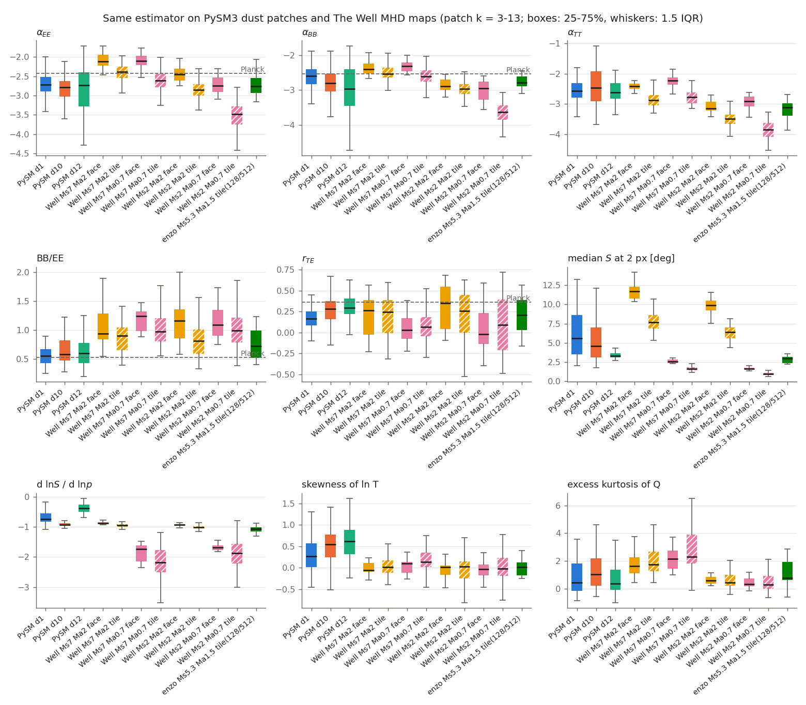
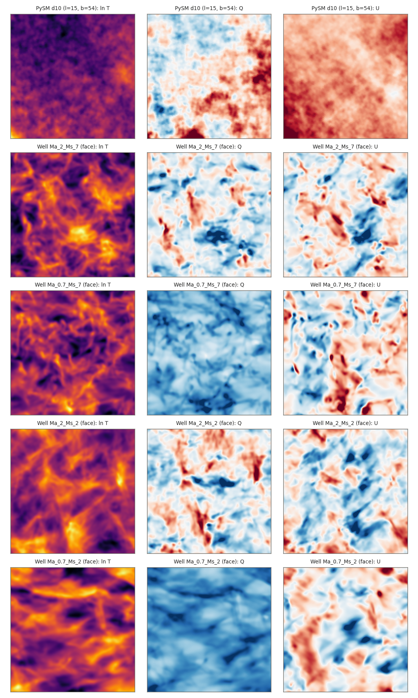
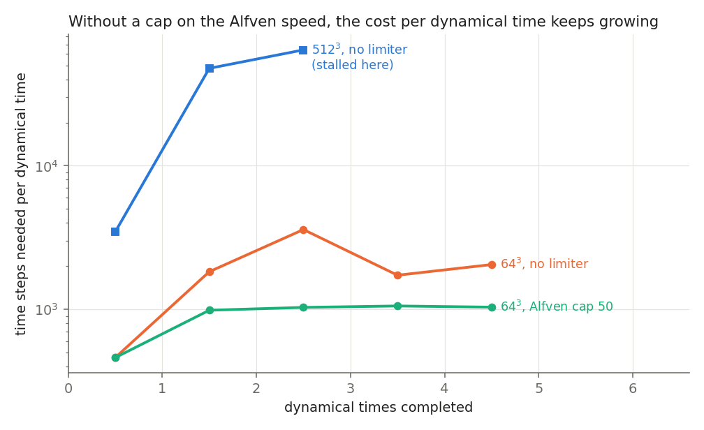
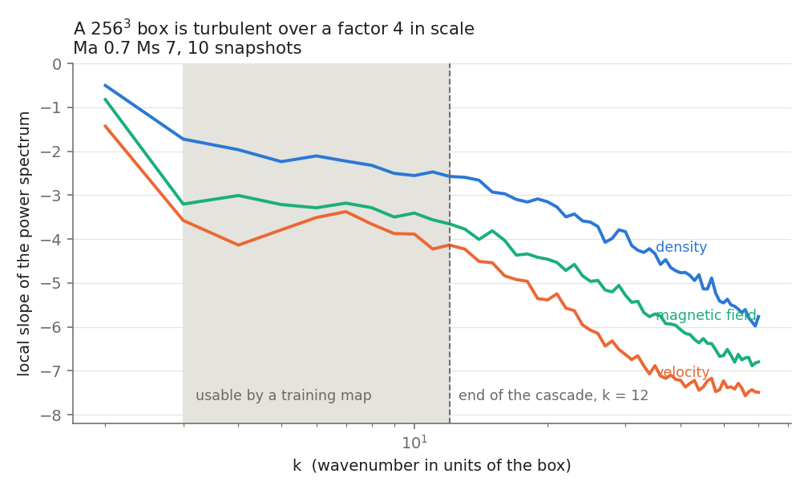

The goal is a CNN that removes Galactic dust from CMB polarization maps, trained on simulations instead of on the sky itself. This report covers the upstream half: which simulations reproduce the published dust statistics, which ones actually resemble real dust, and what resolution the training maps need.
Status. The simulation and analysis chain is complete and validated. The CNN is not trained yet: the training set needs simulations that did not fit in the compute available, and the last section explains exactly what they cost now that the blocking problem is solved.
finding 1
The paper fits every spectral slope as α = a + b·MS + c·MA. We repeated that fit on 100 snapshots streamed from The Well's 256³ boxes, which use the Cho–Lazarian ENO code — unrelated to the paper's Enzo — over its sub-Alfvénic family (MA ≈ 0.8, MS from 0.5 to 8.4).
| slope | a (this work) | a (paper) | b (this work) | b (paper) |
|---|---|---|---|---|
| αρ | −3.47 | −3.61 | 0.152 | 0.160 |
| αv | −3.85 | −3.75 | 0.010 | 0.020 |
| αH | −3.57 | −3.53 | 0.031 | 0.020 |
| αTT | −3.64 | −3.59 | 0.174 | 0.150 |
| αEE | −3.38 | −3.41 | 0.164 | 0.170 |
| αBB | −3.93 | −4.31 | 0.216 | 0.280 |
what this buys us
Everything matches except B-modes, and our own from-scratch solver misses in the same direction. Two independent codes disagreeing with the published B-mode fit the same way points at the B-mode measurement rather than at either code. The velocity spectrum goes the other way: The Well gives αv = −3.85 to −4.03 against the paper's −3.86, while our solver gives −3.41 — that slope is our solver's own numerical dissipation.
finding 2
One estimator, applied identically to simulated maps and to PySM3 dust models at 353 GHz (128×128 patches of 20°, Galactic latitudes 35°–75°, E/B decomposed on the full sphere so nothing leaks at the patch edge, same beam divided out of every spectrum). The estimator was checked against the curved-sky measurement of the same dust model: BB/EE = 0.56 on patches against 0.51 on the full sky.
| source | αEE | αBB | BB/EE | rTE | angle spread | pol. fraction |
|---|---|---|---|---|---|---|
| PySM3 d1 | −2.72 | −2.60 | 0.56 | 0.17 | 5.6° | 0.088 |
| PySM3 d10 | −2.78 | −2.81 | 0.59 | 0.28 | 4.6° | 0.035 |
| PySM3 d12 | −2.78 | −2.99 | 0.60 | 0.30 | 3.3° | 0.057 |
| Enzo — MS 5.3, MA 1.5 | −2.76 | −2.79 | 0.73 | 0.21 | 3.0° | 0.37 p₀ |
| Well — MS 7, MA ≈ 8 | −2.39 | −2.53 | 0.90 | 0.25 | 7.7° | 0.19 p₀ |
| Well — MS 7, MA ≈ 0.8 | −2.61 | −2.60 | 0.98 | 0.07 | 1.6° | 0.75 p₀ |
| Well — MS 2.5, MA ≈ 8 | −2.85 | −2.97 | 0.81 | 0.26 | 6.4° | 0.16 p₀ |
| Well — MS 2.5, MA ≈ 0.8 | −3.48 | −3.64 | 0.99 | 0.09 | 1.0° | 0.73 p₀ |

the decisive result
The public data bracket dust but never match it. A weak mean field gives the right T–E correlation with polarization angles that wander twice as much as dust; a strong mean field gives almost no T–E correlation and a polarization fraction eight times too high. MA ≈ 1.5 — the paper's Planck point, and the one value missing from every public dataset — matches PySM3 on nearly every statistic. The training maps have to be simulated by us, at that field strength.

finding 3
We ran Enzo at 512³ at the paper's Planck point on one 112-core node. Parallel efficiency was never the problem: 2.8×10⁵ cell-updates per core per second, 62% of the wall time inside the MHD solver, load imbalance 1.04. The time step was.
| dynamical times | time steps needed | fastest signal in the box |
|---|---|---|
| 0 → 1 | 3,458 | 29 |
| 1 → 2 | 47,672 | 250 |
| 2 → 2.13 | 64,051 | 900 |
| → 2.44 | 131,684 | 2,295 |
The gas itself moves at about 5. The runaway comes from a handful of cells that the turbulence empties to a millionth of the mean density: their magnetic signal speed B/√ρ sets the time step for the whole box, and those cells carry a millionth of the mass and none of the dust emission. Two three-day segments — about 16,000 core-hours — reached 2.44 of the 10 dynamical times requested.

Enzo has an Alfvén-speed limiter that raises the density of exactly those cells
until their signal speed reaches a cap. Two details are not in the documentation
and came from reading the source: the parameter usually recommended for this
(SmallRho) is not a general floor for this solver, and the limiter
prints one line per capped cell per step, which at 256³ means gigabytes of log. A
one-line patch silences it.
The limiter was then tested rather than assumed: two 64³ runs with identical parameters and forcing seed, one capped and one not.
| quantity | no limiter | Alfvén cap 50 |
|---|---|---|
| cycles for 5 tdyn | 9,665 | 4,571 |
| MS | 4.66 ± 0.25 | 4.80 ± 0.26 |
| MA | 1.44 ± 0.06 | 1.49 ± 0.07 |
| σ(ln ρ) | 1.31 ± 0.05 | 1.34 ± 0.09 |
| αEE | −2.38 ± 0.40 | −2.02 ± 0.35 |
| BB/EE | 1.11 ± 0.23 | 0.89 ± 0.24 |
| αv | −3.90 ± 0.28 | −4.01 ± 0.18 |
| mass added | — | 1.2 × 10⁻⁴ |
The two runs are identical to four decimals until the limiter first fires, then drift apart as any two turbulence runs do after a tiny perturbation, so the honest comparison is statistical: every quantity agrees within the scatter between snapshots. At 64³ that scatter cannot exclude differences smaller than about 0.3 in a spectral slope.
cost after the fix
10 dynamical times take about 4 days and 10,000 core-hours at 512³, or about 8 hours and 900 core-hours at 256³. Before the fix, the 512³ box was heading for 40,000–70,000 core-hours with no end in sight.
finding 4
Three measurements on real 256³ data decide this.
The local slope of the power spectrum is flat through the cascade and steepens where the scheme's numerical dissipation takes over. That knee sits at k ≈ 12 in a 256³ box: physical over a factor of 4 in scale. A 512³ box reaches k ≈ 23.

Binning a 256² projected face down to 128² costs almost nothing. Cutting a native-resolution quarter tile instead is a mistake: such a tile spans mostly the scales where the turbulence is driven, and its slopes are steeper by 0.4–0.9.
| map product | αTT | αEE | αBB | BB/EE | rTE |
|---|---|---|---|---|---|
| native 256² face | −2.59 | −2.25 | −2.61 | 1.10 | 0.10 |
| 128² binned face | −2.60 | −2.26 | −2.63 | 1.10 | 0.09 |
| 128² native tile | −3.13 | −2.70 | −2.79 | 0.92 | 0.14 |
| map size | ℓ at k = 3 | ℓ at k = 12 | pixel |
|---|---|---|---|
| 20° | 54 | 207 | 9.4′ |
| 10° | 108 | 414 | 4.7′ |
| 5° | 216 | 828 | 2.3′ |
Planck measures dust over ℓ ≈ 40–600, a factor of 15 in scale. No single box covers that: 256³ gives a factor of 4, 512³ a factor of 8, and the full range would need about 900³.
answer
Yes, 256³ is enough — provided that training maps are binned full faces rather than cropped tiles, each map is given an angular size (10° puts the simulated range at ℓ ≈ 108–414, inside what Planck measures), and the CNN is not asked to learn structure outside that range from these maps. At 900 core-hours per box against 10,000 for 512³, the production plan is several 256³ seeds rather than one large box.
At the Planck point with the limiter, about 8 hours on one node. Queued as job 47520681.
Several seeds, snapshots every 2 dynamical times (the measured decorrelation time), binned faces, random rotations: about 1,600 maps for roughly 5 × 900 core-hours.
Then test it on PySM3 dust models it never saw during training.
Two independent codes disagree with the published αBB fit in the same direction. That is a result in itself if it holds up.